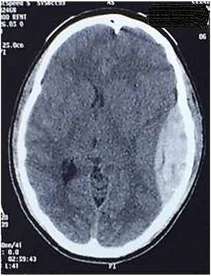
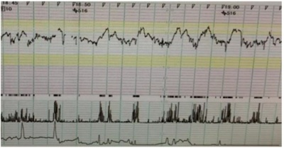

A respeito da diferenciação entre transudatos e exsudatos para o correto manejo de pacientes com derrame pleural, analise as afirmativas. I. Os transudatos são, em sua maior parte, bilaterais; já os exsudatos se apresentam, na maioria das vezes, de forma unilateral. II. Os critérios de Light são parâmetros clínicos utilizados na diferenciação entre transudatos e exsudatos. III. A etiologia mais frequente de derrame pleural do tipo transudato é a insuficiência renal. IV. O derrame pleural secundário à tuberculose é normalmente do tipo exsudativo com valores de adenosina deaminase acima de 40 UI/L. Estão corretas as afirmativas
As hemorroidas são estruturas vasculares normais no canal anal. Aproximadamente 5% da população geral é afetada por sintomas relacionados à doença hemorroidária. Em relação à anatomia, características clínicas e siopatologia das hemorroidas, é correto afirmar:
A prevalência da diverticulose tem aumentado tanto no ocidente quanto em países que adotaram um estilo de vida mais ocidental. A doença diverticular do cólon é uma causa importante de internações hospitalares. Vários fatores de estilo de vida têm sido associados à doença diverticular. Sobre essa doença, analise as afirmativas a seguir. I. Alta ingestão de carne vermelha, dieta pobre em bra alimentar e tabagismo estão associados ao risco de desenvolver doença diverticular. II. Ao contrário da diverticulite, que ocorre principalmente no cólon esquerdo, o sangramento diverticular ocorre principalmente no cólon direito. III. Existem evidências cientí cas robustas que apoiam o uso da mesalazina associado a probióticos para prevenir a recorrência de episódios de diverticulite. Está correto o que se afirma em
Revisar: possível letra faltando em enunciado
O câncer de pulmão é o 3º responsável pelos óbitos de câncer em homens e o 4º em mulheres. Sobre esse tipo de câncer, assinale a afirmativa correta.
Traumatismo Craniencef álico Paciente do sexo masculino, 25 anos, encontra-se internado na Unidade de Tratamento Intensivo por traumatismo cranioencefálico grave. A tomografia computadorizada de crânio encontra-se representada abaixo. Considerando o diagnóstico radiológico, qual é a causa mais relacionada a essa alteração?

Paciente masculino, 35 anos, 70 Kg, vítima de acidente automobilístico, é admitido na unidade de pronto atendimento em urgência e emergência, via SAMU, apresentando FC 125 bpm, PA 110/60 mmHg, FR 26 irpm, SatO2 91%, temp. axilar 35°C; ansioso, porém responsivo, negou comorbidades, referiu última refeição há 4h e a carteira de identidade demonstra tipo sanguíneo AB+. Apresenta fratura exposta em perna esquerda e ferimento penetrante na cavidade abdominal. Após condutas necessárias realizadas, o paciente foi submetido à intubação orotraqueal (IOT) em sequência rápida e mantido sob ventilação mecânica. Foi colhida a gasometria arterial que mostrou os seguintes resultados: pH 7,20; pCO₂ 35 mmHg; HCO₃- 10 mmol/L BE -16 mmol/L; K+ 5.9 mEq/L; Hb 8g/dL; Hct 25%. Sem alterações evidenciadas na monitorização. Foram transfundidas, inicialmente, duas unidades de concentrado de hemácias e três unidades de plasma fresco congelado. Com base no caso, qual o distúrbio ácido básico apresentado?
Paciente masculino, 46 anos, tabagista, obeso, portador de diabetes mellitus insulinodependente compensado e hipertensão arterial sistêmica controlada com inibidor da enzima conversora de angiotensina. Está programada a cirurgia de colecistectomia aberta, razão pela qual é solicitada a avaliação pré-anestésica. Ao exame físico, constata-se presença de barba volumosa, uso de prótese superior e inferior, micrognatia e Teste de Mallampati classificação II. Revisão de sistemas sem alterações e exames laboratoriais dentro da normalidade. Marque V para as afirmativas verdadeiras e F para as falsas. ( ) A última diretriz de avaliação cardiovascular perioperatória da Sociedade Brasileira de Cardiologia não recomenda a suspensão dos inibidores da enzima conversora de angiotensina no perioperatório. ( ) O risco pertinente ao procedimento cirúrgico se refere à provável ocorrência de eventos cardiovasculares perioperatório, independentemente do estado clínico do paciente. A colecistectomia aberta, portanto, é um procedimento de baixo risco (<1%). ( ) A realização de ecocardiograma transtorácico é recomendada para todos os pacientes portadores de hipertensão arterial sistêmica, pois oferece informações adicionais de risco, a exemplo da fração de ejeção, que interferem na escolha das medicações anestésicas. ( ) Conforme a Sociedade Americana de Anestesiologia (ASA), o paciente descrito é classificado como ASA II, isto é, aquele que apresenta doença sistêmica leve a moderada. Assinale a sequência correta.
Procedimentos com anestesia local são frequentes tanto no âmbito da atenção básica à saúde quanto das urgências e emergências. Em relação aos anestésicos locais, analise as afirmativas a seguir. I. Os anestésicos locais bloqueiam de forma reversível a transmissão de impulsos autônomos, sensoriais e motores, nessa sequência e dependente da dose, devido à diferença na composição e diâmetro das fibras nervosas. II. Cada anestésico local possui uma concentração mínima efetiva peculiar e necessária para bloquear a condução dos impulsos nervosos, refletindo as diferentes potências de cada fármaco. III. Nas doses recomendadas de bupivacaína (2-3 mg/Kg), a baixa toxicidade sistêmica relaciona-se à alta capacidade de conjugação a proteínas plasmáticas, diminuindo a sua distribuição pelos tecidos corporais. Está correto o que se afirma em
Durante a técnica infraclavicular de punção da veia subclávia para realização de acesso venoso central, a ponta da agulha deve ser posicionada na direção de qual estrutura?
Paciente de 60 anos de idade, sexo masculino, procura o PA Adulto de Hospital Municipal com quadro há um dia de dor abdominal, localizada em flanco direito, intermitente, tipo cólica, forte intensidade, associada a náuseas, vômitos e febre não termometrada. O médico plantonista inicia o tratamento clínico com medicamentos sintomáticos, com pouca melhora, e faz a hipótese diagnóstica de abdome agudo. Qual a principal hipótese etiológica dessa dor abdominal?
Homem, 31 anos, procurou atendimento médico pois notou nódulo em axila esquerda que vem aumentando de tamanho, associado à fadiga, perda de peso e febre não aferida. Foi submetido à biópsia, em que foram visualizadas células gigantes, multinucleadas, com nucléolos evidentes, compatíveis com células de ReedSternberg. Diante do quadro clínico e do resultado da biópsia, qual a hipótese diagnóstica?
Homem, 72 anos, com cirrose hepática, causada pelo vírus da hepatite C, vem em consulta no ambulatório de hepatologia acompanhado pelo lho, apresentando icterícia ++/4+ e distensão abdominal por volumosa ascite não controlada por paracentese. Filho refere que o pai tem apresentado quadros de confusão mental. Em relação à classificação de Child Pugh, quais exames são necessários para avaliar se o paciente tem indicação de transplante hepático?
Mulher, 55 anos, chega ao pronto atendimento trazida pelo SAMU, torporosa, evoluindo com convulsão e coma. Ao exame físico: PA= 90 x 50 mmHG, FC= 120 bpm, FR= 18 irpm, pulsos nos. Realizados exames laboratoriais com os seguintes resultados: glicemia 1020 mg/dL, Na+ 125 mEq/L, K+ 3,5 mEq/L, ureia 150 mg/dL, creatinina 2,9 mg/dL, urina tipo I com glicose 4+ e corpos cetônicos 1+, gasometria com pH 7,40, bicarbornato 20 mEq/L e Osmolaridade 360 mOsm/kg água. Em relação ao quadro clínico-laboratorial, trata-se de
Homem, 65 anos, hipertenso e tabagista, vem ao ambulatório com queixa de dispneia progressiva há 8 anos. Apresenta tosse crônica com expectoração clara e, neste último mês, evoluiu com dispneia aos pequenos esforços. Ao exame físico: FR= 25 irpm, murmúrio vesicular diminuído difusamente, estase jugular, hepatomegalia 2 cm do rebordo costal direito e edema +++/4+ nos membros inferiores. Demais dados do exame físico sem alterações. Os achados do exame clínico correspondem à doença pulmonar obstrutiva crônica com
Mulher, 60 anos, em acompanhamento há 15 anos de artrite reumatoide, apresentando deformidades em mãos, retorna ao ambulatório com raio X de mãos e punhos com as seguintes alterações radiológicas: hiperextensão das articulações interfalangeanas proximais e exão das articulações interfalangeanas distais. Esses achados correspondem à deformidade em
Homem, 28 anos, admitido na emergência com história de oligúria, urina escura, mialgia generalizada, náuseas e vômitos. Tabagista (20 maços/ano) e usuário de cocaína há 5 anos, cerca de 4 vezes por semana. Nega uso de drogas injetáveis. Refere uso de cocaína inalatória ontem. Exame físico: orientado, desidratado ++/4+, FC= 110 bpm, FR= 20 irpm, PA= 150x100 mmHg, Temp. axilar 36,8° C. Dor à palpação da musculatura difusamente em membros inferiores e avaliação da força muscular limitada pela dor. Demais achados do exame físico sem alterações. Em relação ao quadro clínico do paciente, qual a hipótese diagnóstica?
Homem, 37 anos, agricultor, procedente de Belém do Pará, vem à consulta com queixa de febre há 30 dias, não mensurada, episódios de náuseas e vômitos. Nos primeiros 15 dias, a febre era diária seguida de calafrios. Após esse período, a febre surgia a cada 2 dias, com início abrupto seguido por calafrios e sudorese intensa. Fez uso de dipirona 1g. Nega doenças prévias. Ao exame físico: REG, mucosas hipocoradas ++/4+, PA= 120 x 80 mmHg, FC= 99 bpm, FR= 18 irpm, temp. axilar 39° C, Peso = 70 kg. Abdome globoso, fígado palpável 2 cm do rebordo costal direito e baço palpável 3 cm do rebordo costal esquerdo. Demais dados do exame físico sem alterações. Foi realizada hematoscopia do sangue periférico com presença de
João, 65 anos, veio à consulta ambulatorial trazido pela lha, que queixa estar envergonhada com a mudança de comportamento do seu pai. Há cerca de 4 meses, começou a dizer frases de cunho sexual para a funcionária doméstica da casa, tem falado palavras de baixo calão para pessoas desconhecidas. Refere ainda que não pode deixar restos de comida na mesa, que come tudo, principalmente se for doce e só toma banho se for à noite, caso contrário ca extremamente irritado. O quadro clínico e comportamental do João corresponde à demência
Revisar: possível letra faltando em enunciado
Feminino, 30 anos, vem ao ambulatório com queixa de fraqueza inicialmente em membros inferiores há 3 dias, evoluindo com piora da força muscular em membros superiores há 2 dias. Refere um quadro diarreico há 2 semanas antes do início dos sintomas atuais. Nega disfagia, diplopia, perda de controle es ncteriano, sem nível sensitivo. Nega comorbidades ou história familiar de doença neurológica. Qual o manejo correto desta paciente?
A maior causa de morte no Brasil e no mundo é de origem cardiovascular, que corresponde a cerca de 30% de todas as causas, sendo a insu ciência cardíaca a grande responsável pela maior parte desses óbitos. Há diversas medicações que se mostram e cientes na redução da mortalidade. Nesse contexto, assinale o fármaco que possui efeito bené co na redução da mortalidade cardíaca.
Revisar: possível letra faltando em enunciado
Nuligesta, 26 anos, vem tentando engravidar há 4 anos, sem sucesso. Queixa-se de dispareunia profunda e dor pélvica, informando que a dor piora bastante no período menstrual. Ao toque vaginal, observa-se útero retrovertido, xo, sensível ao toque e à presença de nodulações no ligamento útero-sacral. Após avaliar exames complementares, o médico indica uma videolaparoscopia com biópsia, chegando ao diagnóstico nal. Ao receber explicações sobre as opções de tratamento, a paciente opta pelo uso de um implante liberador de etonogestrel e 6 meses depois, na consulta de retorno, relata alívio significativo do quadro álgico. A melhora da sintomatologia ocorreu porque o medicamento escolhido
Mulher de 47 anos, G2 PC2 A0, procura ginecologista queixando-se de sangramento menstrual prolongado. Relata que suas menstruações duravam em média 4-5 dias, mas nos últimos 6 meses o sangramento vem se prolongando por até 10 dias. Informa que realizou laqueadura tubária há 13 anos e desde então não faz uso de contraceptivos hormonais. Nega comorbidades. Após realização de exame físico e avaliação dos exames complementares, o médico conclui que a causa do sangramento anormal é de ordem estrutural. Qual achado é compatível com o caso descrito?
Mulher casada, G2 P2 A0, 38 anos, tabagista 1 maço/dia, dislipidêmica e hipertensa, teve o último parto há 4 anos. Faz uso regular de sinvastatina 20 mg/dia e losartana 50 mg/dia, mantendo PA em níveis adequados. Informa fazer uso de Ciclo 21 (contraceptivo oral combinado) sem intervalo entre as cartelas, pois não deseja menstruar, estando bem adaptada ao método. Exame físico sem anormalidades, exceto por IMC = 38 Kg/m². Em relação à contracepção, qual a opção correta para essa paciente?
Paciente do sexo feminino, 16 anos, vem para consulta ginecológica acompanhada pela mãe. Relata que nunca menstruou e nega atividade sexual. Sem outras queixas ou afecções clínicas, apresenta ao exame clínico peso 55 kg, estatura 1,63 m, fácies atípica, Tanner M4P5, abdome sem visceromegalias, indolor à palpação. Ao exame ginecológico, vulva com anatomia típica, com pili cação normal, hímem anular integro, vaginometria com cotonete = 2 cm. Não foi realizado exame ginecológico com espéculo. Diante desses dados, qual a principal hipótese diagnóstica e conduta adequada para investigação?
Mulher, 40 anos, lactante em aleitamento materno exclusivo há 2 meses, relata ter identi cado há 3 meses, durante autoexame, um “caroço” na mama esquerda. Nega comorbidades ou doenças importantes no histórico familiar. Informa que nunca fez exame de mamogra a. Ao exame físico, presença de nodulação endurecida com cerca de 3 cm em QSL da mama esquerda. Na axila, não foram palpados linfonodos suspeitos. Qual a conduta correta para esse caso?
Revisar: possível letra faltando em enunciado
Mulher, 23 anos, sem uso de contraceptivos há 3 meses, apresenta ciclos menstruais regulares com 28 dias de intervalo. Para detectar seu período fértil, ela vem observando as modi cações siológicas de sua secreção vaginal. Há 1 semana notou a presença de muco abundante e lante, mas hoje a secreção está mais escassa e viscosa. Qual o per l das gonadotrofinas encontrado hoje?
Multípara, 38 anos, com 29 semanas de gestação, relata 3 episódios de perda de líquido por via vaginal nas últimas 24 horas. Nega contrações ou queixas urinárias e relata boa movimentação fetal. PA 120x70 mmHg, FC 78 bpm, Tax 36,6 ºC, AU 25 cm, BCF 128 bpm, dinâmica uterina ausente. Ao exame especular, colo com orifício em fenda, sem evidência de sangramento ou saída de líquido pelo orifício externo do colo mesmo após manobra de Valsalva. Toque não realizado. O teste de cristalização do muco cervical evidenciou aspecto em “folha de samambaia” e o teste com ta reagente evidenciou pH vaginal alcalino, acima de 6,5. Perante as evidências descritas, qual a recomendação para o caso?
Paciente, G2 PN1 A0, 23 anos, IG 40 semanas e 4 dias, sem comorbidades e sem queixas, apresenta-se para avaliação de vitalidade fetal. PA 120 x 80 mmHg, FC 71 bpm e altura uterina 38 cm. Ao toque vaginal: colo posterior, médio, 40% apagado, dilatado 1 cm, apresentação cefálica no plano - 2 de De Lee. A gestante é direcionada para realização de per l biofísico fetal que revela índice de líquido amniótico de 4,3 cm, com tônus preservado, movimentos fetais e respiratórios presentes. A cardiotocografia está representada abaixo. Qual a conduta obstétrica?

Primigesta, 17 anos, sem pré-natal, com 33 semanas e 2 dias de gestação, procura maternidade, apresentando cefaleia intensa, náusea e edema de membros inferiores há 3 dias. Hoje, queixa-se de cefaleia occipital, vômitos, turvação visual e epigastralgia. Ao exame físico: PA 180 x 110 mmHg, dinâmica uterina ausente, tônus uterino normal, BCF 124 bpm. Ao toque vaginal, colo grosso, posterior, impérvio, sem perdas por via vaginal. A conduta correta para essa situação é:
Mulher, 21 anos, G2 PN1 A0, IG: 29 semanas, sem comorbidades referidas, IMC 27 Kg/m², retorna para consulta com o resultado de curva glicêmica (TOTG 75 gramas) jejum 93 mg/dL; 1ª hora 164 mg/dL; 2ª hora 151 mg/dL. De acordo com os critérios recomendados pelo Ministério da Saúde (2016) para o diagnóstico de conclusão a respeito desse caso?
Lactente, masculino, 18 meses de idade, previamente hígido, foi levado à UPA com história de febre alta (39,2ºC), iniciada há 3 dias, acompanhada de tosse seca, rinorreia e congestão ocular não exudativa. Vacinas em dia. Ao exame, apenas hiperemia de orofaringe e membranas timpânicas. O médico solicitou Rx de tórax, com resultado normal. Liberou a criança para casa com Paracetamol, soro siológico para as narinas e higiene ocular, medicação que já costumava utilizar na criança. Paciente não apresentou melhora, persistindo com o quadro. Após 2 dias, evoluiu com dor abdominal difusa, diarreia (fezes semilíquidas 5x/dia, amareladas, sem muco, pus ou sangue, odor incaracterístico), hiperemia difusa em face, tronco e membros, edema em face, mãos e pés, eritema de mucosa oral e ssuras labiais. Retornou à UPA sendo atendido por outro pro ssional. Ao exame: REG, febril (Tax: 39ºC) taquicárdico, hiperemia ocular bilateral, anictérico e acianótico. Otoscopia mostrou hiperemia. Orofaringe com hiperemia e língua em framboesa. Pescoço com linfonodos palpáveis à direita, sendo o maior com 1,5 cm de diâmetro e sem sinais ogísticos. AR: MV siológico, sem ruídos adventícios. ACV: RCR, 2t, sem sopros. Tempo de enchimento capilar menor que 3 segundos. Abdome plano, simétrico, sem dor à palpação profunda e sem visceromegalias. Genitália masculina sem alteração. SN sem sinais meníngeos. Pele com exantema difuso polimorfo, indolor e não pruriginoso e sinal de Nikolsky negativo. Qual a principal hipótese diagnóstica?
Gestante dá entrada na maternidade do Hospital Universitário em trabalho de parto. Deu à luz a RN nascido masculino, parto vaginal e Apgar 8 e 9. Peso 2.480 g, 45 cm e PC 33 cm. Ao exame, apresentou, ao nascimento, características de crescimento intrauterino restrito (CIUR) e hepatoesplenomegalia. Mãe primigesta fez apenas duas consultas com 2 meses de gestação. Mora em fazenda no interior do estado. No alojamento conjunto, o RN evoluiu com icterícia tardia, sem incompatibilidade sanguínea, com aumento de bilirrubina direta e provas de função hepática alteradas. Foram solicitados exames para investigação: hemograma, sorologias materna e do RN para doenças de transmissão vertical, prova de função hepática, tomografia craniana, US transfontanela e avaliação oftalmológica. Disponíveis até agora os seguintes resultados: I. A tomogra a de crânio, assim como o ultrassom transfontanela, evidenciou atro a cortical, calci cações intracranianas difusas e hidrocefalia. II. A avaliação oftalmológica mostrou sinais de coriorretinite em atividade. Qual a principal hipótese diagnóstica dessa doença congênita?
Menino de 4 anos comparece à consulta com o médico da UESF acompanhado pela mãe, a qual relata que ele urina na cama quase toda noite durante o sono, desde que tentou tirar da fralda aos 2 anos. Refere, ainda, que durante o dia ca sem fralda e urina bem, jato forte, sem disúria e alteração na cor ou cheiro da urina. Nega constipação intestinal e diarreia. Aleitamento materno exclusivo até os 6 meses. Atualmente consome a mesma dieta da família. Caderneta de vacinas em dia. Nega doenças e uso de medicação. Ao exame: criança em BEG, afebril, corado, anictérica, acianótica. Otoscopia e orofaringe sem alteração. AR: Murmúrio vesicular siológico, simétrico, sem ruídos adventícios. ACV: RCR, 2t, sem sopros. Boa perfusão periférica. Abdome: plano, simétrico, indolor, sem visceromegalias. RHA normoativos. Genitália masculina: pênis bem formado, prepúcio retrai e expõe a glande, meato uretral bem posicionado, sem hiperemia, testículos tópicos. SN: sem sinais meníngeos. Pele: sem lesões. Foram solicitados exames da urina: EAS e Urocultura do jato médio, que se apresentam normais. Qual a principal hipótese diagnóstica?
Revisar: possível letra faltando em enunciado
Paciente, sexo masculino, 2 meses e 10 dias de vida, veio encaminhado ao ambulatório de pediatria geral do Hospital Universitário acompanhado da mãe, com história de que a cirurgia de hérnia inguinal foi suspensa devido à anemia da criança. Veio para investigação e tratamento. História Fisiológica: Parto normal, de termo, sem intercorrência e clampeamento tardio do cordão. Peso de 3.300 g, comprimento de 49 cm, PC de 34 cm e Apgar 9 e 10. Nega icterícia neonatal. Alimentação no seio materno exclusivo. Mãe primípara, 22 anos e fez pré-natal sem intercorrências. Nega doenças na família. Mãe A+ e RN O+ e VDRL negativo para ambos. Peso atual de 5.600 g, comprimento de 58 cm, e PC de 39 cm. Exame físico: BEG, afebril, hipocorada (++/4+), anictérica, acianótica, ativa e reativa. Cabeça e pescoço sem alteração. AR: MVF sem ruídos adventícios. ACV: RCR, 2t, sem sopros e tempo de enchimento capilar <3 segundos. Abdome semigloboso, simétrico, sem visceromegalias e RHA +. SN: sem sinais meníngeos. Genitália masculina sem alteração. Pele sem lesões. Foram solicitados os seguintes exames: hemograma: Hb: 9g/dL, Ht: 28%, hemáceas normocrômicas e normocíticas. Contagem de reticulócitos normal. Esfregaço de sangue periférico normal. Qual a principal hipótese diagnóstica?
Mãe leva sua lha de 2 anos e 10 meses de idade na Unidade Básica de Saúde para consulta de puericultura, previamente agendada pela Agente Comunitária de Saúde que, na visita domiciliar realizada, constatou, por meio do cartão da criança, atraso vacinal. Apresentava esquema vacinal completo até um ano de idade. A mãe justi cou o atraso por conta dos inúmeros cuidados que precisa prestar ao marido, pois ele é cardíaco e diabético. O médico disse que a criança estava bem e não tinha contraindicação para ser vacinada, sendo orientada a procurar o setor de imunizações com a nalidade de atualização. Qual a melhor conduta para atualizar a caderneta de vacinas da criança, segundo o PNI-MS?
Lactente masculino, 3 meses, previamente hígido, foi levado à UPA com queixa de febre de 38,5ºC, de início há 3 dias, acompanhado de tosse seca, coriza hialina e espirros. A mãe usou Paracetamol, 5 gotas e soro siológico nas narinas. Hoje relatou também quadro de diarreia 5 vezes ao dia, com fezes semilíquidas, amareladas, sem muco ou sangue e odor incaracterístico. Antes evacuava 2-3 vezes/dia. Diurese presente. Aceita bem o seio materno. A vacina de Meningo C agendada para esta semana ainda não foi realizada. Negou intercorrências gestacionais ou de parto, nasceu a termo, com peso de 3.200 g e Apgar 9 e 9. Ao exame físico, Tax de 38,9º C, FC: 120 bpm, FR: 50 irm e Peso: 6 kg. BEG e febril. Fontanela anterior plana e normotensa. Otoscopia e Orofarige sem alteração. Linfonodos cervicais palpáveis, lisos, móveis indolores e tamanhos normais. AR: murmúrio vesicular siológico e sem ruídos adventícios. ACV: RCR, 2t, sem sopros e boa perfusão periférica. Abdome plano, simétrico, sem visceromegalias e RHA presentes. Genitália masculina bem formada, prepúcio aderido à glande, expõe o meato uretral e testículos tópicos. Pele sem lesões, inclusive perineal. Em relação à avaliação do quadro febril, é correto afirmar que se trata de uma febre
Lactente de 14 meses, masculino, acompanhado da avó foi encaminhado para consulta na Unidade da Estratégia de Saúde da Família pela Agente Comunitária de Saúde, devido ser morador novo de uma das microáreas atendidas. Nasceu prematuro e tem di culdade para ganhar peso e, há 5 meses, tomou vermífugo (mebendazol e metronidazol), sulfato ferroso (10 gotas 2x/dia) e vitamina D (3 gotas), sem melhora. A caderneta da criança apresentou os seguintes dados: parto normal, peso de 2.200 g, altura de 45 cm, PC de 32 cm e Apgar 8 e 10. IG de 35 semanas e vacinas atualizadas até o 9º mês. Testes de triagem neonatal normais. Exame físico sem alteração. Dados antropométricos já corrigidos para a idade gestacional: • Peso 7.500 g (> escore-z -3 e < escore-z -2); • Comprimento: 71cm (> escore-z -2 e < escore-z 0); • IMC 15,3 (> escore-z -2 e < escore-z -1); • PC: 45,5 cm (> escore-z -1 e < escore-z 0). Conforme as curvas de crescimento (z score) para crianças de zero a dois anos, constantes da Caderneta da Criança, onde foram plotados os dados antropométricos atuais, os diagnósticos desse paciente para peso, comprimento, IMC e PC são, respectivamente,
Lactente feminina, 2 meses de vida, é levada pela mãe para consulta na Unidade de Saúde com história de tosse seca iniciada há cerca de 10 dias, sem febre ou coriza. A mãe é solteira, tem 20 anos de idade, primípara, relata que não fez pré- natal e teve apenas corrimento vaginal não tratado. A criança nasceu de parto normal, de termo, chorou forte ao nascer, pesou 2.485 g, cou no alojamento conjunto e recebeu alta com 48 h de vida. O VDRL foi não reagente da mãe e da criança. Já em casa, depois da primeira semana de vida, apresentou conjuntivite bilateral, cursando com edema e secreção ocular aquosa, que se tornou mucopurulenta. Foi orientada pela enfermeira da unidade a pingar o leite do peito e o médico prescreveu pomada oftálmica, com melhora. Vacinada com as vacinas BCG e Hepatite B. Estava agendada para tomar outras vacinas hoje. Aleitamento materno exclusivo. Exame físico: REG, afebril, saturação 96% e sem sinais de toxemia ou desconforto respiratório. Fontanela anterior plana e normotensa e posterior fechada. Otoscopia e orofaringe sem alteração. AR: FR de 66 irpm, MVF sem ruídos adventícios. ACV: RCR, 2t, sem sopros, FC 112 bpm e tempo de enchimento capilar igual a 3 segundos. Abdome sem alteração. Genitália sem alteração. Foram solicitados exames de hemograma, apresentando leucocitose e presença de eosino lia. A radiogra a de tórax apresentou hiperinsu ação com infiltrados intersticiais bilaterais e simétricos. Qual a principal hipótese diagnóstica e o agente causal mais provável?
Escolar, sexo feminino, 9 anos de idade, previamente hígida, é levada pela mãe à UPA com história de fraqueza, episódios repetidos de náusea e vômito, dor abdominal em hipocôndrio bilateral e inapetência há 04 dias, com piora no último dia. Negou febre e referiu sintomas gripais ocorridos 10 dias antes. Há 3 meses voltou a fazer xixi na cama durante a noite, que se acentuou na última semana, e vem perdendo peso, cerca de 4 kg. Negou antecedentes mórbidos, alergias ou uso contínuo de medicamentos. Referiu vacinação em dia. Negou doenças na família. Exame Físico: REG, desidratada (+++/4+), hipocorada (++/4+), eupneica, afebril, PA 100x80 mmHg, peso 26,5 kg (pesava 30 kg), FR 22 ipm, FC 159 bpm, saturando 97% em ar ambiente, presença de enantema e ssura labial. Ritmo cardíaco regular, murmúrios vesiculares universalmente audíveis, abdome sem alterações e tempo de enchimento capilar igual a três segundos. Ao exame neurológico, apresentou- se sonolenta, reativa, sem sinais meníngeos, escala de coma de Glasgow 14 e presença de fraqueza em membros inferiores. Foram solicitados de imediato os seguintes exames laboratoriais: Radiogra a de tórax sem alterações significantes, ECG sem alterações significantes, hemograma com presença de leucocitose sem desvio e com aumento de linfócitos, gasometria arterial com pH=7,16, HCO₃= 5,5 e BE=-24,4. EAS com cetonúria (+++) e glicosúria (++++) e glicemia de 380 mg/dL. Qual a principal hipótese diagnóstica?
Pré-escolar, feminina, 5 anos de idade, veio encaminhada para o Ambulatório de Pediatria do Hospital Universitário com história de quadro de crises epilépticas caracterizadas por perda súbita do tônus postural, extensão do membro superior direito, postura em opistótono e desvio óculo-cefálico para a esquerda, com duração de aproximadamente 30 segundos, iniciadas há 6 meses. Evolui na fase pós-ictal com letargia e confusão prolongada. As crises foram cando cada vez mais frequentes, quase toda semana e não estavam relacionadas com atividade física ou presença de febre. A paciente é lha de pais não consanguíneos, sem história de intercorrências gestacionais ou de parto e com desenvolvimento neurológico normal. Sem história familiar de doença neurológica. Os exames de hemograma, testes bioquímicos e triagem para erros inatos do metabolismo foram normais. O eletroencefalograma evidenciou atividade epileptiforme focal na região occipital do hemisfério cerebral direito, durante o sono. A RM de crânio com resultado normal. PETscan marcado com F-2- Deoxyglicose (FDG) demonstrou hipometabolismo glicolítico nas regiões têmporooccipital direita e parietal alta posterior direita. Essas crises epilépticas que a paciente apresentou, segundo a Liga Internacional Contra a Epilepsia (ILAE - 2017), são classificadas de início
Uma das queixas mais frequentes nas consultas nas UBS é cefaleia, que pode ter como causas desde condições muito benignas até potencialmente ameaçadoras à vida do paciente. Na abordagem inicial das cefaleias, é importante saber identi car sinais de alarme que sugerem uma causa secundária de maior gravidade. Quais sinais de alarme para cefaleia secundária?
Mulher, 55 anos, costureira, procurou UBS queixando-se de dor na face radial do punho esquerdo há 8 meses. Ao exame físico, foi realizado teste de Finkelstein com resultado positivo, observando dor e limitação na movimentação da musculatura do polegar da mão direita. Esses achados são sugestivos de qual diagnóstico?
Rita, 26 anos, GII PI A0, idade gestacional de 8 semanas e 3 dias por DUM, veio em consulta pré-natal na UBS trazendo o seguinte exame: Sorologia para Toxoplasmose IgM Reagente e IgG Reagente. O médico da UBS iniciou pro laxia com Espiramicina 1g de 8/8h e solicitou Teste de Avidez de IgG. Hoje, Rita vem à consulta trazendo o exame que mostra alta avidez. Qual conduta adequada a ser tomada pelo médico?
“A infecção latente pelo sem manifestação da doença ativa. Estima-se que um quarto da população mundial esteja infectada pelo tuberculosis Sobre os critérios para tratamento da infecção latente, conforme orientação do Ministério da Saúde, considere: I. Recém-nascido que coabita com caso-fonte diagnosticado laboratorialmente. II. Portador de III. Paciente em uso de corticóide (Prednisona 5mg/dia por 6 meses) com PPD de 4mm. Para o tratamento da infecção latente, estão corretos os critérios
Rogério, 53 anos, tabagista 20 anos-maço, diabético tipo 2 há 6 anos. É atendido na UBS com queixa de dormência e formigamento nas extremidades inferiores há cerca de 8 meses, sem perda da força. O exame físico revela sensação diminuída ao toque leve, picada de agulha e sensação vibratória em ambos os pés, estendendo-se até 5 cm abaixo dos joelhos, simetricamente. Percebe-se falta de pelos nas pernas no mesmo nível. Demais exames médicos e neurológico sem alteração. Qual o diagnóstico mais provável e a correta avaliação dos pés?
No Brasil, a territorialização é um pressuposto básico do Programa de Saúde da Família (PSF), instituído pelo Ministério da Saúde desde 1994. É um aspecto fundamental para o bom desenvolvimento da prática de um médico de família e comunidade. De acordo com o Ministério da Saúde, o que é a territorialização?
Existem muitas ferramentas da prática do médico de família e comunidade. Uma delas é o método clínico centrado na pessoa (MCCP), um modelo de abordagem à consulta, bastante utilizado na prática. Instrumento extremamente importante na prática clínica e na atenção primária à saúde. Sobre o MCCP, assinale a afirmativa correta.
O re uxo gastroesofágico (RGE) é uma condição comum e de elevada prevalência nas crianças. Pode-se a rmar que todas as crianças terão algum episódio de RGE durante alguma fase do seu desenvolvimento, o que preocupa muito os pais, levando à procura constante por atendimento médico nas Unidades Básicas de Saúde. Em relação ao RGE siológico, assinale a afirmativa correta.
Program Saúde da Família PSF e Estratégia Saúde da Família ESF No Sistema Único de Saúde, atenção domiciliar (AD) é indicada para pessoas que, estando em estabilidade clínica, necessitam de atenção à saúde em situação de restrição ao leito ou ao lar de maneira temporária ou definitiva ou em grau de vulnerabilidade na qual a atenção domiciliar é considerada a oferta mais oportuna para tratamento, paliação, reabilitação e prevenção de agravos, tendo em vista a ampliação de autonomia do usuário, família e cuidador (BRASIL, 2017). Um médico da UBS Nova Serena tem na sua área de abrangência um número significativo de demandas de AD e precisa organizá-las de uma forma sistemática. Qual alternativa
A Política Nacional da Atenção Básica (PNAB) do Ministério da Saúde do Brasil define as atribuições de cada pro ssional que atua nesse nível de atenção. De acordo com essa política, analise as a rmativas sobre as atribuições dos membros de cada equipe da atenção básica. I. Participar das atividades de educação permanente é papel de todos os membros da equipe. II. Participar do gerenciamento de insumos necessários para o adequado funcionamento da UBS é função do agente comunitário de saúde. III. É atribuição do médico realizar consultas clínicas e pequenos procedimentos cirúrgicos na UBS e, quando necessário ou indicado, no domicílio. Estão corretas as afirmativas